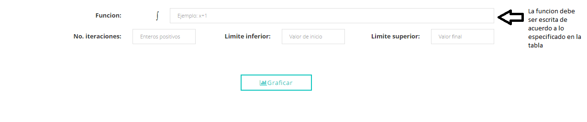

A continuación se muestra una imagen donde se indica cada campo de la herramienta que función cumple y como debe ser utilizada para lograr las representaciones deseada.
| Función | Escritura |
|---|---|
| x y | x**y |
| 2√x | np.sqrt(x) | 3√x | np.cbrt(x) |
| sen(x) | np.sin(x) |
| cos(x) | np.cos(x) |
| tan(x) | np.tan(x) | sen-1(x) | np.arcsin(x) |
| cos-1(x) | np.arccos(x) |
| tan-1(x) | np.arctan(x) |
| ⌊x⌋ | np.floor(x) |
| ⌈x⌉ | np.ceil(x) | ln(x) | np.log(x) | log(x) | np.log10(x) | log2(x) | np.log20(x) | x módulo y | np.mod(x,y) |